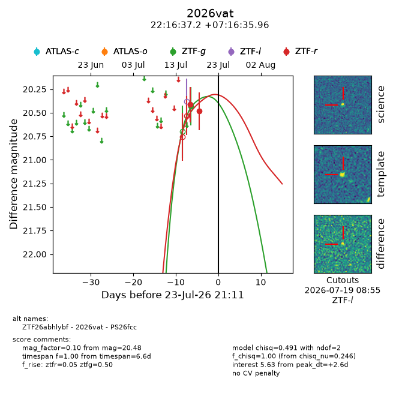
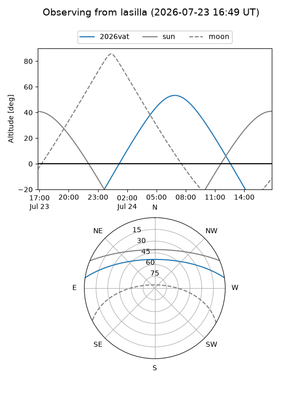
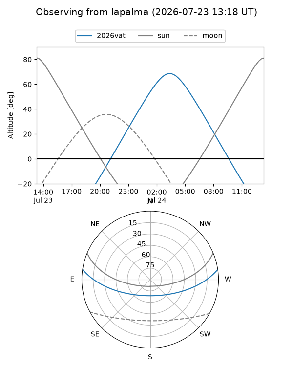
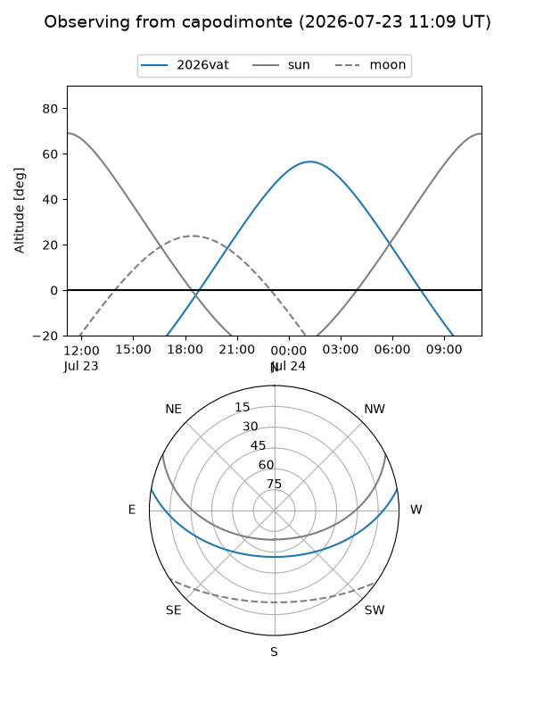
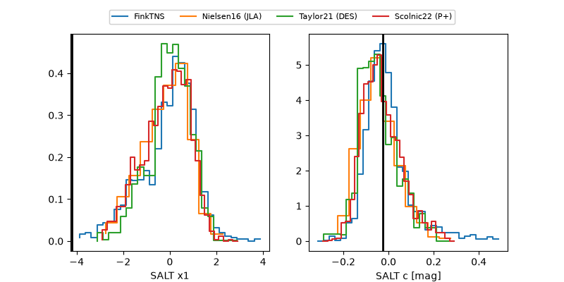

2026vat
Target 2026vat at 2026-07-23 21:14
Aliases and brokers:
FINK-ZTF: ztf.fink-portal.org/ZTF26abhlybf
Lasair-ZTF: lasair-ztf.lsst.ac.uk/objects/ZTF26abhlybf
ALeRCE-ZTF: alerce.online/object/ZTF26abhlybf
YSE-PZ: ziggy.ucolick.org/yse/transient_detail/2026vat
TNS name: wis-tns.org/object/2026vat
Direct TNS query: direct search
alt names
ZTF26abhlybf (ztf,fink_ztf)
2026vat (tns,yse)
PS26fcc (panstarrs)
Coordinates:
equatorial (ra, dec) = 334.1549,+7.27665
equatorial (HMS+DMS) = 22:16:37.18,+07:16:35.96
galactic (l, b) = (69.8313,-39.13727)
Flags:
TNS type: nan
peak dt: +2.6
Photometry:
last ztfg=20.43, ztfr=20.48
1 ztfg, 2 ztfr detections
Lightcurve

Visibility



Additional plots
